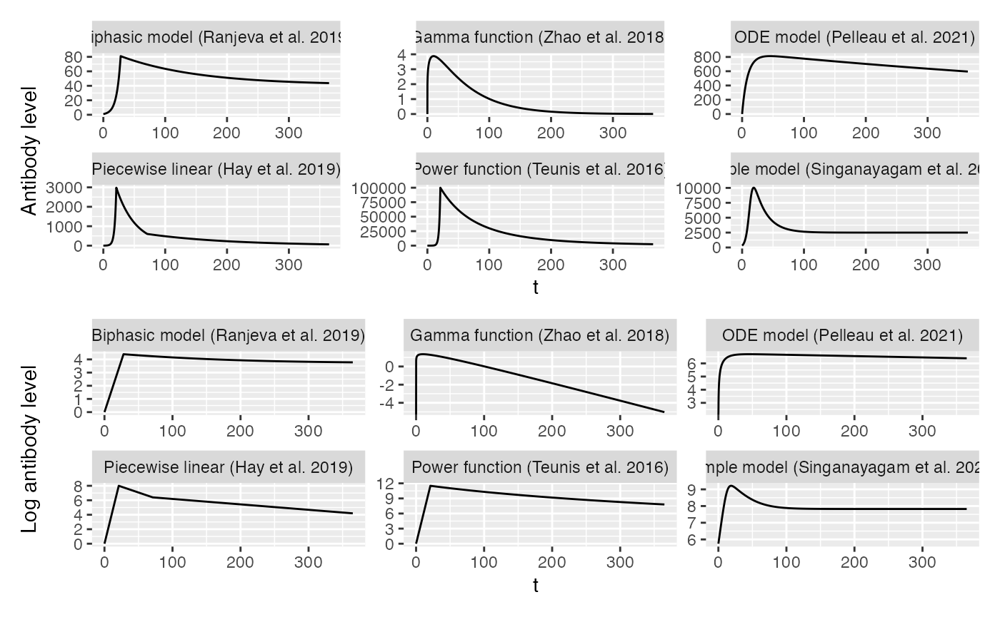

Antibody kinetics models
Source:vignettes/antibody_kinetics_models.Rmd
antibody_kinetics_models.RmdAntibody kinetics models
library(seroepirecipes)
library(ggplot2)
library(patchwork)
library(dplyr)
#> Warning: package 'dplyr' was built under R version 4.2.3The model
Antibody kinetics models
times <- seq(0,365,by=0.1)
pars_power <- c(t_peak=21, peak=10^5, r=1.25,v=0.001,k=0,y0=1)
y1 <- data.frame(y=kinetics_power_function(times,pars_power),t=times,ver="Power function (Teunis et al. 2016)")
pars_simple <- c(a=0.3,b=0.05,c=0.25,ymax=10000,t_peak=18)
y2 <- data.frame(y=kinetics_simple(times,pars_simple),t=times,ver="Simple model (Singanayagam et al. 2021)")
pars_ranjeva <- c(y0=1,peak=80,k=0,t_peak=28,w=0.008,frac=0.5)
y3 <- data.frame(y=kinetics_ceiling(times,pars_ranjeva),t=times,ver="Biphasic model (Ranjeva et al. 2019)")
pars_ode <- c("A"=0,"beta"=100,"rho"=0.25,"c_s"=0.25,"c_l"=0.1,"delta"=0,"r"=0.001)
y4 <- data.frame(y=kinetics_simple_ode(times,pars_ode),t=times,ver="ODE model (Pelleau et al. 2021)")
pars_gamma <- c("y0"=0,"peak"=300,"shape"=1.2,"scale"=50)
y5 <- data.frame(y=kinetics_gamma(times,pars_gamma),t=times,ver="Gamma function (Zhao et al. 2018)")
pars_piecewise <- c("t_i"=0,"tp"=21,"mu"=8,"dp"=0.2,"ts"=50,"m"=0.0075,"lower_bound"=0, "y0"=0)
y6 <- data.frame(y=kinetics_piecewise(times,pars_piecewise),t=times,ver="Piecewise linear (Hay et al. 2019)")
y <- bind_rows(y1, y2, y3, y4, y5, y6)
y$y[!is.finite(y$y)] <- 0
y <- y %>% mutate(log_y = if_else(ver == "Piecewise linear (Hay et al. 2019)", y, log(y)), y = if_else(ver=="Piecewise linear (Hay et al. 2019)", exp(y), y))
p1 <- ggplot(y) + geom_line(aes(x=t,y=y)) + facet_wrap(~ver,scales="free") + ylab("Antibody level")
p2 <- ggplot(y) + geom_line(aes(x=t,y=log_y)) + facet_wrap(~ver,scales="free") + ylab("Log antibody level")
p1/p2